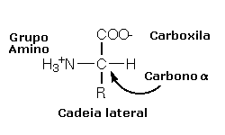
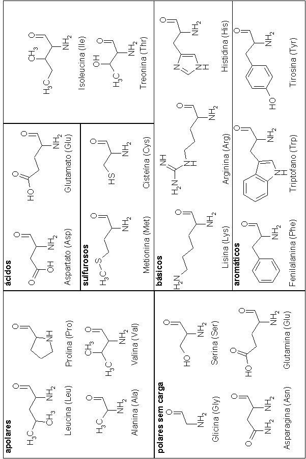
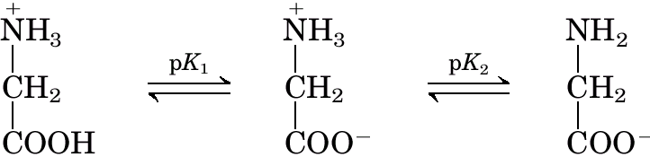
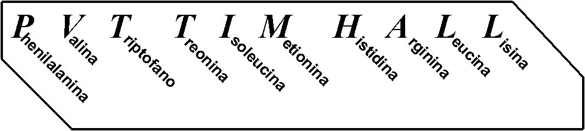
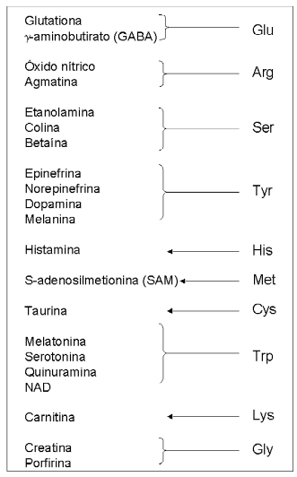

Aminoácidos
Introdução
Aminoácidos são os vagões que formam o trem das proteínas. Poético, não ? Então vamos a algo menos poético. Imagine um trem em alta velocidade descarrilhando dezenas de vagões para fora do trilho. Nesse caso, o empilhamento de vagões ligados uns aos outros constitui, metaforicamente, a estrutura tridimensional de uma proteína, com seus vagões representando os aminoácidos ligados, porém espalhados numa bola gigantesca de ferros retorcidos, com muito óleo, cheiro de fumaça, fogo, sangue e…ops, exagerei! Voltemos aos aminoácidos, então. Dessa forma, pode-se afirmar que os aminoácidos são os blocos constitutivos das proteínas. Quantas proteínas existem por aí ? Ninguém sabe ao certo, mas suspeita-se que existam centenas de milhares de estruturas protéicas na Natureza. E quantos aminoácidos existem por aí, nessas proteínas ? Apenas 20.
Isso mesmo, vinte aminoácidos, com pouquíssimas variações estruturais, compõe a totalidade de proteínas existentes nos organismos vivos. Como toda proteína tem ao menos 50 aminoácidos (vagões) em sua composição (trem), e como existem 20 aminoácidos básicos que as compõe, então deve teoricamente existir 2050 proteínas, ou seja, 1065 estruturas diferentes de proteínas. E isto para uma proteína de 50 aminoácidos.
Experimente somar a esta quantia uma de 51, 52, 53, etc aminoácidos, e você chegará a um número astronômico de possibilidades, já que existem proteínas com milhares de aminoácidos. Apesar de ser este um cálculo bastante simplificado, ele nos oferece uma idéia da riqueza de combinações de aminoácidos que podem existir numa proteína, a partir das 20 estruturas básicas principais. Os vinte aminoácidos que compõe as proteínas são diferentes também em apenas uma parte de sua estrutura, a qual pode ser ácida, básica, aromática, alifática, sulfatada ou hidroxilada. Isto lhes permite reagir com diversas biomoléculas para uma operação adequada do metabolismo celular.
Detalhes
Aminoácidos são ácidos carboxílicos aminados que podem existir livres em solução ou combinados covalentemente, neste caso dando origem a peptídios e proteínas (cada ligação entre aminoácidos libera uma molécula de água). Existem basicamente 20 tipos principais, capazes de formar a quase totalidade de proteínas existentes na natureza, e mais de 200 análogos secundários, relacionados ao metabolismo celular. Destes, existem 53 aminoácidos modificados em sementes e folhas (metabólitos secundários para defesa vegetal), e outros tantos agindo no metabolismo global, tais como citrulina e ornitina (ciclo da uréia).O peso molecular médio dos aminoácidos situa-se em torno de 110 (u.m.a, relativa ao carbono 12, ou Da, relativo ao átomo de hidrogênio).
A fórmula ionizada geral dos aminoácidos é a representada à Figura 1, onde R representa uma cadeia lateral que distingue um aminoácido de outro, e o carbono \(\alpha\), o carbono assimétrico ou quiral, e que confere à estrutura dos aminoácidos a sua atividade óptica. Em plantas e animais, os aminoácidos desviam a luz plano polarizada à esquerda, sendo portanto denominados L-aminoácidos (levrógiro, diferente de D, dextrógiro, aminoácidos típicos de paredes bacterianas).

Em plantas folhosas e leguminosas pode-se encontrar D-aminoácidos e oligopeptídios. Conforme a estrutura da cadeia lateral, temos aminoácidos básicos (lisina, arginina e histidina, todos positivos em solução fisiológica), ácidos (aspartato e glutamato, negativos na mesma solução), polares sem carga (asparagina, glutamina, serina, treonina, cisteína, prolina), apolares alifáticos (glicina, valina, alanina, leucina, metionina, isoleucina), e apolares aromáticos (triptofano, tirosina e fenilalanina). De modo geral, os aminoácidos são bastante solúveis em água (excessão para os aromáticos). A Figura 2 ilustra as estruturas químicas dos 20 aminoácidos proteicos.

Além de sua atividade óptica, os aminoácidos possuem reatividade química, dependendo do pH da solução em que se encontram, conforme a Figura 3 abaixo (ionização da glicina):

Os valores de pK indicam um pH no qual 50% do aminoácido encontra-se na forma dissociada e 50% na forma protonada.
Em plantas, bactérias, e alguns animais, ocorre a síntese dos vinte aminoácidos principais, o que não existe em mamíferos, necessitando esses últimos da injesta de 10 deles (na criança, 8 no adulto). Esses chamados aminoácidos essenciais podem ser memorizados pela sigla PVT TIM HALL (Phe,Val,Thr, Trp,Ile,Met, His,Arg,Leu,Lys) tal como na Figura 4.

Alguns derivados de aminoácidos possuem importância fisiológica (Figura 5). Triptofano origina serotonina, um importante mediador da percepção à dor, regulação do sono e pressão arterial; tirosina origina melanina (pigmentação) e catecolaminas (neurotransmissores dopamina, adrenalina e noradrenalina); histidina origina histamina, um vasodilatador; arginina, combinada à glicina, origina creatina (para reserva energética celular); metionina forma S-adenosilmetionina (SAM), carreador de grupos CH3 no organismo; glutamato produz o ácido \(\gamma\)-aminobutírico (GABA), importante neurodepressor; alanina participa da estrutura da vitamina pantotenato, além de representar uma forma importante de eliminação de ácido lático em tecido muscular; cisteína origina taurina, um composto conjugado a ácidos biliares (emulsificação de lipídios).

Aplicação
O nitrogênio dos aminoácidos pode ser incorporado através do metabolismo microbiano (produção de amônia, \(NH_3\)), vegetal (absorção radicular), ou pela fixação de nitrogênio gasoso (formando \(NO_3^-\)). Neste caso, uma simbiose de algumas bactérias nitrificantes com leguminosas permite a conversão de \(N_2\) molecular em amônia (ação do complexo da nitrogenase), e esta em glutamina e glutamato, ambos os aminoácidos capazes de interconversão com os demais.
Outras formas de fixação incluem algumas bactérias livres (Azotobacter), bactérias associadas (Citrobacter, associação com térmitas), e plantas não leguminosas. Além dos aminoácidos livres e pertencentes às proteínas, outras formas de azoto se apresentam em vegetais, tais como ureídos (alantoína, um metabólito do ácido úrico), aminas (metilamina, agmatina, putrescina, cadaverina), clorofilas, e alguns alcalóides e compostos inorgânicos azotados.
Aminoácidos não protéicos podem representar, muitas vezes, a porção principal da fração azotada solúvel dos tecidos vegetais. Em sementes pode-se encontrar até 10% de um único aminoácido não protéico em sua matéria seca. Muitos deles são microbicidas, sendo tóxicos aos animais (ex: latirismo provocado por vários aminoácidos não protéicos de Lathyrus sylvestris), outros são próprios do metabolismo, como citrulina (produção de uréia).
O enxofre apresentado nos aminoácidos metionina e cisteína, bem como em biomoléculas como coenzima A e glutationa, pode ser assimilado por ação da A. nidulans, a qual converte formas inorgânicas de sulfato (SO4), sulfeto (SO3) e sulfito (SO2), em cisteína orgânica.
Antagonismo e desequilíbrio de aminoácidos na dieta.
A suplementação de aminoácidos a rações é frequentemente utilizada em conjunto com aditivos nutricionais. Em criação de aves para nutrição humana, por exemplo, a adição de lisina a 1% é suficiente para uma melhoria na conversão alimentar e na deposição protéica de carne. Entretanto, existem certas combinações de aminoácidos que podem gerar competição ou antagonismo, já que o excesso de determinado aminoácido pode reduzir, por competição a sítios comuns de adsorção, o teor de outros afins. Assim, pode-se obter uma redução no crescimento animais acima se a dieta for simultaneamente suplementada com arginina, antagonista competidor da lisina. Dietas com alto teor de leucina podem resultar em reduzida absorção de aminoácidos ramificados, tais como isoleucina e valina.
Não obstante, dietas nutricionalmente balanceadas neste requisito, podem surtir benéfices variadas, sem a necessidade de complementação de aminoácidos afins. A adição de alguns aminoácidos limitantes também pode surtir efeitos benéficos sob mal nutrição proteica.
Níveis aumentados de metionina e cisteína podem elevar o teor da coenzima succinil CoA, formada por grupos tiol, e presente no ciclo do ácido cítrico, redirecionando o metabolismo para uma inibição da lipogênese. Deficiências de alguns aminoácidos podem originar sintomas relacionados a malnutrição, como a carência de triptofano relacionada ao aparecimento de catarata, ou esteatose relacionada a baixos teores de treonina e metionina. Por outro lado, intoxicações demandadas pelo excesso de alguns aminoácidos também podem impactar a saúde, como o excesso de tirosina (lesões oculares), ou metionina (alterações histopatológicas).
Também na produção animal já foi verificado anomalias decorrentes de dietas de gramíneas com teores excessivos de tirosina (lesões oculares e patas), metionina (alterações histopatológicas), mimosina (queda de pelos e atraso no crescimento), triptofano (acidose láctica, timpanismo e edema pulmonar, pela conversão no princípio tóxico metilindol).
Aminoácidos e indústria.
De modo geral, qualquer processamento ou armazenamento de compostos ou alimentos a base de aminoácidos tem por consequência a redução de seu teor e biodisponibilidade. O tratamento térmico (fervura, decocção, fritura, calor seco, defumação a quente, congelamento, etc), por excelência, pode reduzir em até um terço a integridade estrutural e a solubilidade de aminoácidos. Neste sentido, preservam-se os esqueletos carbônicos necessários ao aproveitamento energético, mas perde-se em qualidade nutricional e síntese protéica. Reações químicas específicas entre os grupos aminados de aminoácidos e aldeídos e cetonas de carboidratos (reação de Maillard, induzida por calor ou reagentes químicos) podem resultar compostos aminados não protéicos. Mesmo sob conservação em temperatura ambiente, como ocorre com os produtos da ensilagem e fenação, pode ocorrer perda significativa de aminoácidos ou transformações unidirecionais (conversão de glutamina e asparagina em glutamato e aspartato, respectivamente).
Processamentos e enriquecimentos também podem originar sub-produtos com reduzido teor de aminoácidos. O processo de preparação do café, por exemplo gera uma quantidade substancial de borra, em média 480 kg para cada tonelada de café verde, e com redução à metade da quantidade de aminoácidos significativos originalmente presentes, como o ácido glutâmico.
Aminoácidos podem ser ainda utilizados como marcadores do produtos comercializados, cujo rastreamento e qualidade já se encontram estabelecidas pela legislação pertinente. Assim, o teor de colágeno presente em salsichas, salames e chorizos, cuja elaboração exige ingredientes cárneos e não cárneos, provenientes de retalhos de abate e desossa, pode estar inversamente relacionado com a qualidade dos primeiros, já que se trata de proteína extensivamente presente em tecido conjuntivo, típico de pele, ossos e tendões.
Este teor pode ser medido através do conteúdo de hidroxiprolina presente nos produtos. Portarias específicas da legislação brasileira limitam o teor relativo de proteínas colagenosas a 16 % para produtos cárneos. Como comparação, proteínas vegetais (soja, texturizada, etc) são limitadas a 7,7 % do peso seco. Dessa forma, a hidroxilisina, aminoácidos presente em mais de um quinto da estrutura do colágeno, pode servir como excelente marcador de sua presença, quantificação realizada pela Espanha desde o final da década de 70.